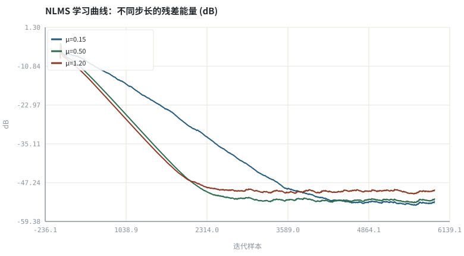
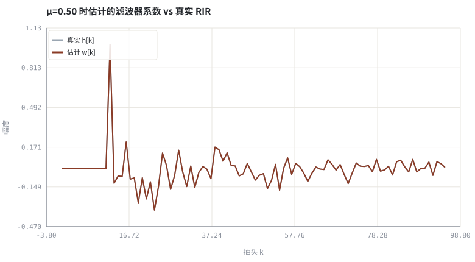

第 05 章自适应滤波：LMS、NLMS 与收敛
把「求一组滤波系数」变成逐样本的梯度下降，这是整个上卷的心脏。
本章位置：第 04 章 · 线性系统、卷积与频域实现 给出固定系数的卷积，本章让系数在线学习；第 06 章 · 频域自适应滤波：FDAF、分块 MDF 与收敛 把同一更新式搬进频域，第 10 章 · 用 NLMS 实现一个可验证的 AEC 用它实现完整 AEC。
NLMS 就是在线随机梯度下降：x 是特征、d 是标签、e 是损失梯度、μ/‖x‖² 是自适应学习率。双讲相当于标签里混入了大量噪声样本，必须暂停训练。
- 能推导 LMS 与 NLMS 的更新式并说明归一化项的作用。
- 能实现 NLMS 辨识一段房间冲激响应并画出学习曲线。
- 能量化步长、正则项与滤波器长度对收敛速度/稳态误差的影响。
- 能解释双讲时为何必须冻结系数更新。
§知识点地图
每个知识点都配了 1～2 个扩展学习链接；本章完整资源清单见 扩展学习。
| # | 知识点 | 扩展学习 | 状态 |
|---|---|---|---|
| 1 | 最速下降与梯度估计 | Least mean squares filter ↗ · DSPRelated ↗ | 正文已覆盖 |
| 2 | LMS 更新式 | Least mean squares filter ↗ · Stanford CCRMA · Julius O. Smith ↗ | 正文已覆盖 |
| 3 | NLMS 归一化 | Least mean squares filter ↗ · speexdsp 源码 ↗ | 正文已覆盖 |
| 4 | 步长与稳定性 | Least mean squares filter ↗ · DSPRelated ↗ | 正文已覆盖 |
| 5 | 正则项 δ | Least mean squares filter ↗ · DSPRelated ↗ | 正文已覆盖 |
| 6 | 学习曲线与稳态误差 | Least mean squares filter ↗ · DSPRelated ↗ | 正文已覆盖 |
| 7 | 权重误差范数 | Least mean squares filter ↗ · DSPRelated ↗ | 正文已覆盖 |
| 8 | 双讲冻结 | ITU-T G.168 ↗ · Microsoft AEC Challenge ↗ | 正文已覆盖 |
§5.1一条更新式，四个可调量
e[n] = d[n] − wᵀ[n]x[n] | LMS: w ← w + μ·e[n]·x[n]
NLMS: w ← w + (μ / (‖x[n]‖² + δ))·e[n]·x[n] ，0 < μ < 2
| 量 | 作用 | 调大的后果 |
|---|---|---|
| μ 步长 | 收敛速度 | 收敛快但稳态误差大、双讲时更易发散 |
| δ 正则 | 防止输入能量接近 0 时步长爆炸 | 过大则收敛变慢，等效缩小 μ |
| L 阶数 | 能覆盖的回声尾长度 | 算力线性增长、收敛变慢 |
| 冻结条件 | 双讲/近端语音期间停止更新 | 太保守则路径变化后追不上 |
NLMS 的归一化本质上是把学习率按输入能量做自适应缩放：语音电平忽大忽小时，LMS 的等效步长会剧烈波动，NLMS 则保持稳定。这就是它与 Adam/RMSProp 一类归一化优化器 homologous 的地方。
§5.2收敛看两条曲线
- 学习曲线：
10log₁₀(e²)随样本数下降，斜率反映收敛速度，地板高度反映稳态失调（misadjustment）。 - 权重误差：
‖w − h‖²下降，说明辨识的是真实路径而非仅仅拟合当前样本。 - 双讲时
d[n]中的近端语音与x[n]不相关，梯度里混入大噪声，系数会被推离 h——工业实现必须做双讲检测（第 07、11 章）。
§Python 实验
实验 5-1 · NLMS 辨识房间冲激响应与步长扫描
#!/usr/bin/env python3
# -*- coding: utf-8 -*-
"""用 NLMS 在线估计 h，画学习曲线、比较三个步长，并输出消除后的可听残差。
全部语音 / 噪声 / 房间冲激响应均为代码合成信号，仅用于教学演示机制与量级。
"""
from __future__ import annotations
import math
import pathlib
import random
import statistics
import sys
import time
_here = pathlib.Path(__file__).resolve()
for _p in _here.parents:
if (_p / "tools" / "dsp.py").exists():
sys.path.insert(0, str(_p / "tools"))
break
from dsp import (SAMPLE_RATE, fft, hann, stft, istft, magnitude_db, spectrum,
white_noise, tone, chirp, synthetic_speech, rir, convolve,
fft_convolve, delay, clip, normalize_peak, rms, rolling_rms,
smooth, db, energy_db, snr_db, erle_db, seg_snr_db,
scale_align, si_sdr_db, lufs_approx,
write_wav, read_wav, wav_info)
from chart import Chart, heatmap, BLUE, RED, GREEN, AMBER
FIG = _here.parents[1] / "fig"
AUDIO = _here.parents[1] / "audio"
FIG.mkdir(exist_ok=True)
AUDIO.mkdir(exist_ok=True)
random.seed(7)
# ---- 参数区 ----
N, L = 6000, 96
MUS = (0.15, 0.50, 1.20) # 三个步长对照
DELTA = 1e-3 # 正则项
SMOOTH = 200 # 学习曲线平滑窗
# ---- 计算与作图 ----
rng = random.Random(7)
far = white_noise(rng, N, 0.35) # 白噪声激励充分，收敛最快
true_h = rir(rng, L, decay=0.004, direct_delay=12)
echo = fft_convolve(far, true_h)[:N]
target = [echo[i] + rng.gauss(0, 0.002) for i in range(N)]
def nlms(mu):
w, errs, out = [0.0] * L, [], []
for n in range(L, N):
xv = [far[n - i] for i in range(L)]
y = sum(w[i] * xv[i] for i in range(L))
e = target[n] - y
power = sum(v * v for v in xv) + DELTA
for i in range(L):
w[i] += mu * e * xv[i] / power
errs.append(e * e)
out.append(e)
return w, errs, out
results = {mu: nlms(mu) for mu in MUS}
def smooth_curve(vals, win):
out, v = [], 0.0
for i, x in enumerate(vals):
v = v + (x - v) / min(i + 1, win)
out.append(10 * math.log10(v + 1e-12))
return out
c = Chart(FIG / "05-learning.svg", "NLMS 学习曲线：不同步长的残差能量 (dB)",
xlabel="迭代样本", ylabel="dB")
for mu, color in zip(MUS, (BLUE, GREEN, RED)):
c.line(range(len(results[mu][1])), smooth_curve(results[mu][1], SMOOTH),
color, label="μ=%.2f" % mu)
print("学习图:", c.save())
w = Chart(FIG / "05-weights.svg", "μ=0.50 时估计的滤波器系数 vs 真实 RIR",
xlabel="抽头 k", ylabel="幅度")
w.line(range(L), true_h, "#9aa6b2", label="真实 h[k]")
w.line(range(L), results[0.50][0], RED, label="估计 w[k]")
print("权重图:", w.save())
write_wav(AUDIO / "05-before.wav", normalize_peak(target))
write_wav(AUDIO / "05-error.wav", normalize_peak(results[0.50][2]))
for mu in MUS:
wt, errs, out = results[mu]
mse = statistics.fmean(errs[len(errs) // 2:])
werr = math.sqrt(sum((a - b) ** 2 for a, b in zip(wt, true_h)))
print("μ=%.2f 稳态MSE=%.6f 权重误差=%.4f 输出/输入能量比=%.4f" %
(mu, mse, werr, sum(v * v for v in out) / sum(v * v for v in target)))
print("前半段均方误差=%.6f 后半段=%.6f（下降说明收敛）" %
(statistics.fmean(results[0.50][1][:1000]),
statistics.fmean(results[0.50][1][-1000:])))操作：对照三个步长的稳态 MSE、权重误差与学习曲线；试听 05-error.wav。 预期与判读：学习曲线先快速下降再进入稳态；权重误差随 μ 单调变大（0.0018→0.0036→0.0078），而稳态 MSE 都在 1e-5 量级且非单调（受观测噪声地板影响）。大步长收敛快、失调大，但稳态误差还叠加了噪声地板，不能只看一个数。
改参数看趋势：把 far 换成 synthetic_speech（有色激励），观察收敛明显变慢。 文件位置：part1/05-adaptive-filter/code/05-nlms.py


05-before.wav
含回声的目标信号（16 kHz / 16-bit 单声道，代码合成信号，不是真实录音）
05-error.wav
NLMS 输出的残差（回声已被消除）（16 kHz / 16-bit 单声道，代码合成信号，不是真实录音）
代码块右上角可一键复制；仓库里的 code/*.py 由 tools/extract_code.py 从这些代码块自动抽取。脚本只用标准库、固定 random.seed(7)，运行后写出 fig/*.svg 与 audio/*.wav；批量运行用 ./tools/run_python.sh。
§本章参考资料
按本章知识点挑选的精读资料；更多检索入口见 扩展学习。
§常见误区
- δ 设为 0，静音段输入能量趋零导致系数爆炸。
- μ 取到 2 以上，更新发散。
- 用语音而非白噪声做激励，误判为算法不收敛。
- 双讲时继续更新，滤波器被近端语音带跑。
§习题与思考
- 推导 LMS 的均方收敛条件 0 < μ < 2/λ_max。
- 解释为什么 δ 必须与输入功率同量级。
- 在实验里加入双讲段并观察权重误差如何跳变。
§扩展学习
继续检索
- Google Scholar：LMS NLMS adaptive filter convergence step size ↗
- arXiv：LMS NLMS adaptive filter convergence step size ↗
- GitHub：LMS NLMS adaptive filter convergence step size ↗
全书链接总表见 FFmpeg Filters 文档 ↗ 与 附录 A.7；滤镜是否可用请以本机 ffmpeg -filters 为准。
§延伸阅读与内链
- 第 06 章 · 频域自适应滤波：FDAF、分块 MDF 与收敛 频域自适应；第 07 章 · 双讲检测、时延漂移与路径突变 双讲检测；第 10 章 · 用 NLMS 实现一个可验证的 AEC AEC 实现。